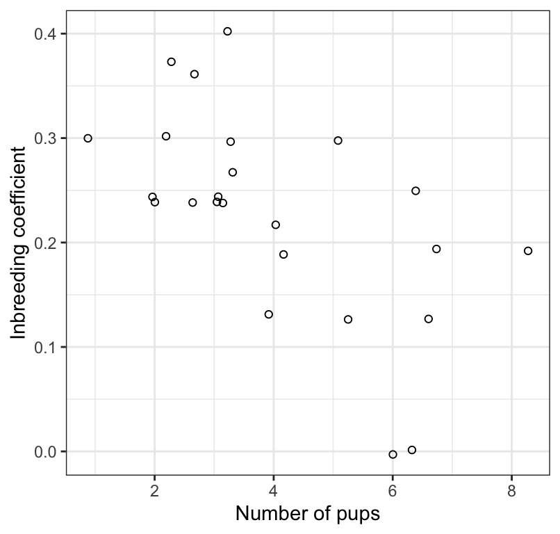
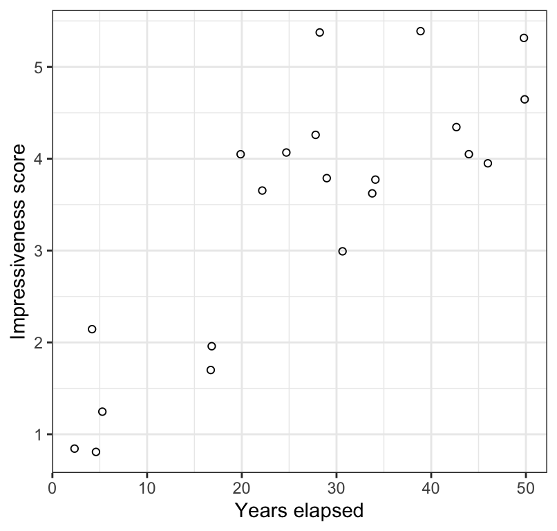
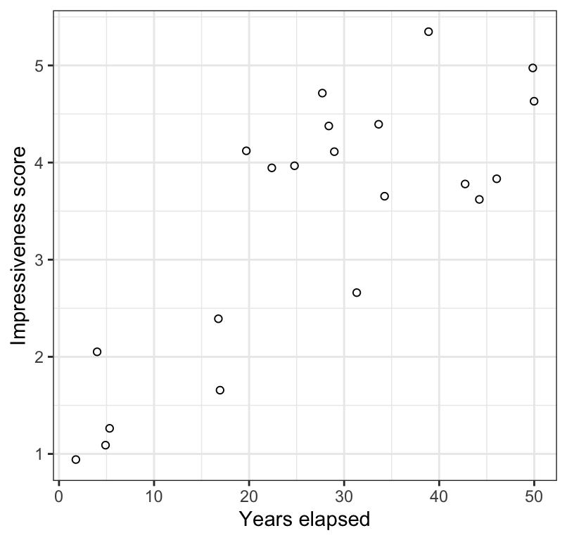

library(dplyr)
library(ggplot2)
library(readr)
library(skimr)
library(broom)
library(knitr)
library(janitor)
library(biol202)16 Analyzing associations between two numerical variables
Tutorial learning objectives
- Learn about using correlation analyses to test hypotheses about associations between two numerical variables
- Learn that the Pearson correlation coefficient measures the strength and direction of the association between two numerical variables
- Learn about the assumptions of correlation analysis
- Learn parametric and non-parametric methods for testing association between two numerical variables
16.1 Load packages and import data
Load the packages we need for this tutorial:
We’ll use the “wolf.csv” and “trick.csv” datasets (discussed in examples 16.2 and 16.5 in the text, respectively).
data(wolf)
data(trick)The wolf dataset includes inbreeding coefficients for wolf pairs, along with the number of the pairs’ pups surviving the first winter.
Explore the data:
wolf %>% skim_without_charts()| Name | Piped data |
| Number of rows | 24 |
| Number of columns | 2 |
| _______________________ | |
| Column type frequency: | |
| numeric | 2 |
| ________________________ | |
| Group variables | None |
Variable type: numeric
| skim_variable | n_missing | complete_rate | mean | sd | p0 | p25 | p50 | p75 | p100 |
|---|---|---|---|---|---|---|---|---|---|
| inbreed_coef | 0 | 1 | 0.23 | 0.10 | 0 | 0.19 | 0.24 | 0.30 | 0.4 |
| n_pups | 0 | 1 | 3.96 | 1.88 | 1 | 3.00 | 3.00 | 5.25 | 8.0 |
We see that there are 24 observations for each of the two variables, and no missing values. If there WERE missing values, be sure to report the correct sample size in your results!
Now let’s explore the trick dataset:
trick %>% skim_without_charts()| Name | Piped data |
| Number of rows | 21 |
| Number of columns | 2 |
| _______________________ | |
| Column type frequency: | |
| numeric | 2 |
| ________________________ | |
| Group variables | None |
Variable type: numeric
| skim_variable | n_missing | complete_rate | mean | sd | p0 | p25 | p50 | p75 | p100 |
|---|---|---|---|---|---|---|---|---|---|
| years | 0 | 1 | 27.29 | 15.21 | 2 | 17 | 28 | 39 | 50 |
| impressiveness_score | 0 | 1 | 3.43 | 1.36 | 1 | 2 | 4 | 4 | 5 |
It includes 21 observations, no missing values, and two integer variables: “years”, and “impressiveness_score”. Reading example 16.5 from the text, we see that the latter variable is a form of ranking variable.
16.2 Pearson correlation analysis
It is commonplace in biology to wish to quantify the strength and direction of a linear association between two numerical variables.
For example, in an earlier tutorial we visualized the association between bill depth and bill length among Adelie penguins, using the “penguins” dataset. Here we learn how to quantify the strength and direction of this type of association by calculating the Pearson correlation coefficient.
When drawing inferences about associations between numerical variables in a population, the true correlation coefficient is referred to as “rho” or \(\rho\).
The sample-based correlation coefficient, which we use to estimate \(\rho\), is referred to as \(r\):
\[r = \frac{\sum{(X_{i}-\bar{X})(Y_{i}-\bar{Y})}}{\sqrt{\sum{(X_{i}-\bar{X})^2}} {\sqrt{\sum(Y_{i}-\bar{Y})^2}}}\]
Note
In the calculation of \(r\) it does not matter which variable is treated as the \(X\) and which as the \(Y\). However, in many instances there may good reason to choose which serves as the \(X\) (explanatory) and which as the \(Y\) (response).
16.2.1 Hypothesis statements
As a refresher, first consult the steps to hypothesis testing.
Researchers were interested in whether inbreeding coefficients of the wolf litters were associated with the number of pups surviving their first winter.
Both variables are numerical, and so the first choice is to conduct a Pearson correlation analysis. This analysis yields a sample-based measure called Pearson’s correlation coefficient, or r. This provides an estimate of \(\rho\) - the true correlation between the two variables in the population. The absolute magnitude of r (and \(\rho\)) reflects the strength of the linear association between two numeric variables in the population, and the sign of the coefficient indicates the direction of the association.
The hypothesis statements should be framed in the context of the question, and should include the hypothesized value of the population parameter.
H0: Inbreeding coefficients are not associated with the number of pups surviving the first winter (\(\rho = 0\)). HA: Inbreeding coefficients are associated with the number of pups surviving the first winter (\(\rho \ne 0\)).
We’ll set \(\alpha\) = 0.05.
16.2.2 Visualize the data
We learned in an earlier tutorial that the best way to visualize an association between two numeric variables is with a scatterplot, and that we can create a scatterplot using the geom_point function from the ggplot2 package:
wolf %>%
ggplot(aes(x = n_pups, y = inbreed_coef)) +
geom_point(shape = 1) +
xlab("Number of pups") +
ylab("Inbreeding coefficient") +
theme_bw()We notice that there doesn’t appear to be the correct number of points (24) in the scatterplot, so there must be some overlapping.
To remedy this, we use the geom_jitter function instead of the geom_point function.
wolf %>%
ggplot(aes(x = n_pups, y = inbreed_coef)) +
geom_jitter(shape = 1) +
xlab("Number of pups") +
ylab("Inbreeding coefficient") +
theme_bw()
That’s better!
Interpreting a scatterplot
In an earlier tutorial, we learned how to properly interpret a scatterplot, and what information should to include in your interpretation. Be sure to consult that tutorial.
We see in Figure @ref(fig:pupscatter) that the association between the inbreeding coefficient and number of surviving pups is negative, linear, and moderately strong. There are no apparent outliers to the association.
16.2.3 Assumptions of correlation analysis
Correlation analysis assumes that:
- the sample of individuals is a random sample from the population
- the measurements have a bivariate normal distribution, which includes the following properties:
- the relationship between the two variables (\(X\) and \(Y\)) is linear
- the cloud of points in a scatterplot of \(X\) and \(Y\) has a circular or elliptical shape
- the frequency distributions of \(X\) and \(Y\) separately are normal
- the relationship between the two variables (\(X\) and \(Y\)) is linear
Checking the assumptions of correlation analysis
The assumptions are most easily checked using the scatterplot of X and Y.
What to look for as potential problems in the scatterplot:
- a “funnel” shape
- outliers to the general trend
- non-linear association
If any of these patterns are evident, then one should opt for a non-parametric analysis (see below).
(See Figure 16.3-2 in the text for examples of non-conforming scatterplots)
Based on Figure @ref(fig:pupscatter), there doesn’t seem to be any indications that the assumptions are not met, so we’ll proceed with testing the null hypothesis.
Warning
Be careful with “count” type variables such as “number of pups”, as these may not adhere to the “bivariate normality” assumption. If the variable is restricted to a limited range of possible counts, say zero to 5 or 6, then the association should probably be analyzed using a non-parametric test (see below). The variable “number of pups” in this example is borderline OK…
16.2.4 Conduct the correlation analysis
Conducting a correlation analysis is done using the cor.test function that comes with R.
This function does not produce “tidy” output, so we’ll make use of the tidy function from the broom package to tidy up the correlation output (like we did in for ANOVA output).
Notice that the function expects the “x” and “y” variables as separate arguments.
And here’s how to implement it. First run the cor.test function, and notice we provide the “x” and “y” variables
wolf.cor <- cor.test(x = wolf$inbreed_coef, y = wolf$n_pups,
method = "pearson", conf.level = 0.95,
alternative = "two.sided")Let’s have a look at the untidy output:
wolf.cor
#>
#> Pearson's product-moment correlation
#>
#> data: wolf$inbreed_coef and wolf$n_pups
#> t = -3.5893, df = 22, p-value = 0.001633
#> alternative hypothesis: true correlation is not equal to 0
#> 95 percent confidence interval:
#> -0.8120418 -0.2706791
#> sample estimates:
#> cor
#> -0.6077184Now let’s tidy it up and have a look at the resulting tidy output:
wolf.cor.tidy <- wolf.cor %>%
broom::tidy()Show the output:
wolf.cor.tidy
#> # A tibble: 1 × 8
#> estimate statistic p.value parameter conf.low conf.high method alternative
#> <dbl> <dbl> <dbl> <int> <dbl> <dbl> <chr> <chr>
#> 1 -0.608 -3.59 0.00163 22 -0.812 -0.271 Pearson's… two.sided- The “estimate” value represents the value of Pearson’s correlation coefficient \(r\)
- The “statistic” value is actually the value for \(t\), which is used to test the significance of r
- The “p.value” associated with the observed value of t
- The “parameter” value is, strangely, referring to the degrees of freedom for the test, \(df = n - 2\)
- The output also includes the confidence interval for r (“conf.low” and “conf.high”)
- The “method” refers to the type of test conducted
- The “alternative” indicates whether the alternative hypothesis was one- or two-sided (the latter is the default)
Despite the reporting of the t test statistic, we do not report t in our concluding statement (see below).
16.2.5 Concluding statement
It is advisable to always refer to a scatterplot when authoring a concluding statement for correlation analysis.
Let’s re-do the scatterplot here.
wolf %>%
ggplot(aes(x = n_pups, y = inbreed_coef)) +
geom_jitter(shape = 1) +
xlab("Number of pups") +
ylab("Inbreeding coefficient") +
theme_bw()Here is an example of a good concluding statement:
Litter size is significantly negatively correlated with the inbreeding coefficient of the parents (Figure @ref(fig:pupscatter2); Pearson r = -0.61; 95% confidence limits: -0.812, -0.271; \(df\) = 22; P = 0.002).
Note
Tip Remember to double-check if you had any missing values in your dataset, do that you don’t report the wrong sample size in your figure caption and / or concluding statement.
- Using the
penguinsdataset that loads with thepalmerpenguinspackage, test the null hypothesis that there is no linear association between bill length and bill depth among Gentoo penguins. HINT: Before using thecor.testfunction, you’ll first need to create a new tibble that includes only the “Gentoo” species data.
16.3 Rank correlation (Spearman’s correlation)
If the assumption of bivariate normality is not met for Pearson correlation analysis, then we use Spearman rank correlation.
For example, if one or both of your numerical variables (X and / or Y) is actually a discrete, ordinal numerical variable to begin with (e.g. an attractiveness score that ranges from 1 to 5), then this automatically necessitates the use of Spearman rank correlation, because it does not meet the assumptions of bivariate normality. (This is why one needs to be careful with count data).
We’ll use the trick dataset for this example, and the data are described in example 16.5 in the text.
16.3.1 Hypothesis statements
The null and alternative hypotheses are:
H0: There is no linear correlation between the ranks of the impressiveness scores and time elapsed until the writing of the description (\(\rho_{S} = 0\)).
HA: There is a linear correlation between the ranks of the impressiveness scores and time elapsed until the writing of the description (\(\rho_{S} \ne 0\)).
Let’s use \(\alpha\) = 0.05.
As shown in the hypothesis statements above, we are interested in \(\rho_{S}\), which is the true correlation between the ranks of the variables in the population. We estimate this using \(r_{S}\), Spearman’s correlation coefficient.
Unlike in the Pearson correlation case (above), which uses t as a test statistic, the rank correlation analysis simply uses the actual Spearman correlation coefficient as the test statistic.
16.3.2 Visualize the data
Let’s visualize the association, again using the geom_jitter function to help see overlapping values:
trick %>%
ggplot(aes(x = years, y = impressiveness_score)) +
geom_jitter(shape = 1) +
xlab("Years elapsed") +
ylab("Impressiveness score") +
theme_bw()
In Figure @ref(fig:trickplot) we see a positive and moderately strong association between the impressiveness of written accounts of the Indian rope trick by firsthand observers and the number of years elapsed between witnessing the event and writing the account.
16.3.3 Assumptions of Spearman rank correlation
Spearman rank correlation assumes that:
- the observations are a random sample from the population
- the relationship between the two variables is monotonic; in other words it assumes that the relationship between the ranks of the two numerical variables is linear.
Checking assumptions
As in the Pearson correlation analysis, we use the scatterplot to check the assumptions.
As shown in Figure @ref(fig:trickplot), there is a monotonic relationship between the two variables.
16.3.4 Conduct the test
We use the same cor.test function to conduct the test, but change the “method” argument accordingly:
trick.cor <- cor.test(x = trick$years, y = trick$impressiveness_score,
method = "spearman", conf.level = 0.95,
alternative = "two.sided")
Note
You may get a warning message, simply saying that it can’t compute exact P-values when there are ties in the ranked data. Don’t worry about this.
trick.cor.tidy <- trick.cor %>%
broom::tidy()
trick.cor.tidy
#> # A tibble: 1 × 5
#> estimate statistic p.value method alternative
#> <dbl> <dbl> <dbl> <chr> <chr>
#> 1 0.784 332. 0.0000257 Spearman's rank correlation rho two.sided- The “estimate” value represents the value of Spearman’s correlation coefficient \(r_S\); this is the value you report.
- The “statistic” value is NOT NEEDED so ignore
- The “p.value” associated with the observed Spearman’s correlation coefficient
- The “method” refers to the type of test conducted
- The “alternative” indicates whether the alternative hypothesis was one- or two-sided (the latter is the default)
Note
There is no confidence interval reported with Spearman correlation analysis, so there is no need to report one in the concluding statement for a rank correlation. Nor is the degrees of freedom reported, so be sure to have figured out the appropriate degrees of freedom (or sample size “n”) to report in your concluding statement.
16.3.5 Concluding statement
As in the preceding Pearson correlation example, we can refer to the Figure in the parentheses of our concluding statement. Note also that we report n rather than degrees of freedom.
trick %>%
ggplot(aes(x = years, y = impressiveness_score)) +
geom_jitter(shape = 1) +
xlab("Years elapsed") +
ylab("Impressiveness score") +
theme_bw()
Concluding statement:
The rank of impressiveness scores of written accounts of the Indian rope trick by firsthand observers is significantly positively correlated with the rank of number of years elapsed between witnessing the event and writing the account (Figure @ref(fig:trickplot2); Spearman \(r_S\) = 0.78; \(n\) = 21; P < 0.001).